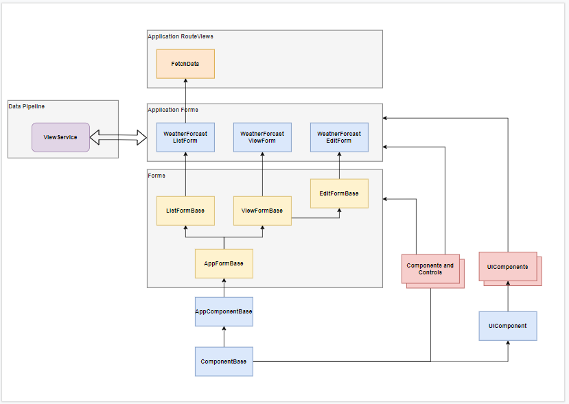

Table of Contents
Project Structure and Framework
Document List
This set of articles describes a framework for building and structuring Database Applications in Blazor.
It's just a framework. I make no recommendations: use it or abuse it. It's what I use. It's lightly opinionated: using out-of-the-box Blazor/Razor/DotNetCore systems and toolkits wherever possible. The CSS framework is a lightly customized version of BootStrap.
There are five articles describing various aspects of the framework and coding patterns used:
- Project Structure and Framework - a bit of an introduction.
- Services - Building CRUD Data Layers.
- View Components - CRUD Edit and View Operations in the UI.
- UI Components - Building HTML/CSS Controls.
- View Components - CRUD List Operations in the UI.
The articles have changed drastically since their original release:
- The whole framework is less opinionated. I've dropped many of the more radical approaches to some issues in Blazor/SPAs.
- The libraries have been re-organised so Server and WASM projects can co-exist.
- Everything has been updated to Net5.
- The Repo home has moved.
- Server and WASM SPAs are now hosted and run from the same site.
These articles are not:
- An attempt to define best practice.
- The finished product.
This first article proves an overview of the framework and solution architecture, and my reasons for making certain design decisions.
Repository and Database
The repository for the articles has moved to Blazor.Database Repository. All previous repos are obselete and will be removed shortly.
There's a SQL script in /SQL in the repository for building the database.
The demo site has changed now the Server and WASM have been combined. The site starts in Server mode - https://cec-blazor-database.azurewebsites.net/.
Design Philosophy
The high level application design looks like this:

This may look too complex for a simple application, why not just grab the data from the datasource in the display page. Up to you, but you (or someone else who has to maintain the code) will almost certainly regret that decision at some point.
UI and Data Domains are pretty self explanatory, but what exactly is the Core Domain?
It's all the code that makes your application unique. It's the business logic that processes the raw data from the data store and the logic that takes user input and stores sensible data from it. The point is you should de-couple all this code from the data source and the UI. Get it right and you can change the data store or the front end with little or no impact on the core application.
Solution Structure
The application is configured to build and deploy both Server and WASM versions of the SPA, and host both on the same web site. The solution is broken down into a number of projects based on:
- Split between generic library code that can be across multiple solutions, and application specific code.
- Split to ensure separation of concerns. The core application code in Blazr.Database.Core only has a dependancy on the Blazr.SPA library.
- Split because of incompatibles between project types. A WASM project can't depend or be compiled with a Microsoft.ASPNetCore.App framework project. API controllers need to be compiled within the Microsoft.ASPNetCore.App framework.
The result are a set of projects as follows:
- Razr.SPA - cross application re-usable code.
- Razr.UIComponents - cross application re-usable UI components.
- Razr.Database.Core - Core Domain code specific to the application.
- Razr.Database.Data - Data Domain code specific to the application.
- Razr.Database.UI - UI Domain - components/forms/pages - specific to the application.
- Razr.Database.Controllers - API controllers specific to the application.
- Razr.Database - Blazor project to buid the WASM application code.
- Razr.Database.Web - the web server applicaton.

There are also testing projects currently being developed.
You may have noticed at this point that there's no Blazor Server project. You don't need one, you will see why later.
Libraries
There are two resource libraries - Razor.SPA and Razor.UIComponents.
Razor.SPA has four namespaces:
- Razor.SPA.Data for all Data Domain code.
- Razor.SPA.Core for all Core Domain code.
- Razor.SPA.Components for all UI Domain code.
- Razor.SPA for any code not in these categories.
All the code in Razor.UIComponents is in the UI Domain.
Data Classes
All the data classes reside in the Core Domain and are thus in the Razr.Database.Core project. The database/datasets are specific to the project so the Data Interface and the Core Application datasets match. In other projects you may need a set Data Domain datasets and a mapping processes to build the Core Domain data classes.
Data is divided into three object types:
Model Records - these are immutable records and represent a single table or view in the database. Brokers and Connectors work with Model Records. All model classes implement an
IDbRecordinterface.Compound Records - these are immutable records based on a Model Record, but contain processed data and/or data from other model records associated with the main model record.
Edit Model Classes - these are editable versions of model records. They contain logic to track, validate and build model records to save. All edit classes implement
IEditRecord, and optionallyIValidationinterfaces
The Data Access and Core Projects
The design:
- Standardises the interfaces between the Data Domain and the underlying data storage,
- Standardises the interfaces between the Data Domain and the Core Domain.
- Make the domains testable.
- Use naming conventions to provide abstraction. Model classes have the same names as
DbSetsorDataSets.

Data Stores
There are three data stores the application can use.
MS SQL database accessed through Entity Framework. The connection string defined in
AppSettings. The database is accessed through aDbContextclassMSSQLWeatherDbContext. TheDbContextservices are created through a DBContextFactory implemented through theAddDBContextFactoryservice extension. The application accesses the database using theIDbContextFactory<TDbContext>interface.SQLite in-memory database accessed through Entity Framework. The connection string defined in
AppSettings. The database is accessed through aDbContextclassSQLiteWeatherDbContext. There is a single DbContext, which can cause issues. This datastore is only for unit testing.Custom In-Memory Data Store. This is a lightweight SQL style data store. It's accessed through the
InMemoryWeatherDataStoreservice.
Brokers
Brokers provide the application interface for the data stores. They reside in the Data Domain, but the IDataBroker interface definition is in the Core Domain. The DataBroker is responsible for standard CRUDL - Create/Read/Update/Delete/List - actions against database entities.
The following brokers are defined in Blazr.SPA, implementing a set of generics based boilerplate code.
IDataBroker defines the common interface, implementing CRUDL in Database language terminology. Method names reflect the terminology used in the underlying data storage - Select, Update, Insert,... Blazr.SPA
BaseDataBroker provides an abstract base implementation of the interface. Blazr.SPA
SQLServerDataBroker interfaces with the SQL EF database context used by Blazor Server and the API controller.
SQLiteServerDataBroker interfaces with the SQLite EF database context used by Blazor Server and the API controller.
InMemoryDataStoreBroker interfaces with the in memory data store context used by Blazor Server and the API controller.
APIDataBroker provides the API based data broker for Blazor WebAssembly.
These brokers implement generics using TRecord to represent the record class. The EF methods use GetDbSet, a DbContext extension method, to return the DbSet object for TRecord. The datastore has a similar function to get the DataSet for the TRecord.
The Core Domain defines three data Brokers:
WeatherMSSQLDataBrokerWeatherSQLiteDataBrokerWeatherInMemoryDataBroker
The WeatherSQLDataBroker implemented in Blazr.Database.Data looks like this, and demonstrates the level of abstraction and boilerplating achieved:
public class WeatherSQLDataBroker : ServerDataBroker<MSSQLWeatherDbContext> { public WeatherSQLDataBroker(IConfiguration configuration, IDbContextFactory<MSSQLWeatherDbContext> dbContext) : base(configuration, dbContext) { } }
Connectors
Connectors provide the data interface between the Core Domain and Data Brokers in the Data Domain.
IDataServiceConnector defines the common interface, implmementing CRUDL in more normal programming terminology - get, save, update, ...
ModelDataServiceConnector implements the interface using generics to provide a abstract connector to any data source.
These classes/intefaces are generic and defined in Blazr.SPA.
A single application specific Connector, WeatherDataServiceConnector, is declared in the application Core Domain.
public class WeatherDataServiceConnector : ModelDataServiceConnector { public WeatherDataServiceConnector(IDataBroker dataBroker, ILoggingBroker loggingBroker) : base(dataBroker, loggingBroker) { } }
ViewServices
View Services provide the connection between the UI and the application data store. They reside in the Core Domain and contain all the business and UI logic. There are three types:
- ModelViewServices - these expose single base model data to the UI.
- CompoundModelServics - these expose complex models built from base models. An example would be a weather station and its associated daily weather station data.
- EditModelServices - these transform record data into editable model classes and expose and manage the edit process.
In the Razr.SPA Library:
IModelViewServicedefines the interface for standard model view servicesBaseModelViewServicedefining an abstract implementation.
In the application WeatherForecastViewService contains the data required by the UI to List/View/Edit the weather data.
public class WeatherForecastViewService : BaseModelViewService<WeatherForecast>, IModelViewService<WeatherForecast> { public WeatherForecastViewService(IDataServiceConnector dataServiceConnector) : base(dataServiceConnector) { } }
UI Domain
The UI is structured to use re-usable components built in Razor/Html markup across an application, with the majority of the code in the base library.
Page is a much misused term in SPAs: frameworks could and should have introduced some new terminology. I only use the Pages directory for real web pages, and Page to describe a web page served by a web server. SPAs aren't web sites. Programmers need to step outside the web page paradigm to understand how they work. The Blazor UI is component based; to think of it containing Pages perpetuates the paradigm, and with it a lot of misconceptions. The only web page in a SPA is the launch page. Once the SPA launches, the application changes out components to transition between Views. I've built an SPA with no router or Urls in sight - just like a desktop application.
I use the following terminology thoughout these articles:
- Page - the launch web page on the web site. The only page in an SPA.
- RouteView/Routed Component. These are all terms used by various people describing the pseudo page. I use the term RouteViews. This is the content displayed in the content section of a Layout, and normally determined by a defined route. A Route deson't load a page, it loads a RouteView which is a component. We'll look at these in more detail later in this article.
- Forms. Forms are logical collections of controls that are either displayed in a view or a modal dialog. Lists, view forms, edit forms are all classic forms. Forms contain controls not HTML.
- Controls. Controls are components that display something: they emit HTML code to the Renderer. For example, an edit box, a dropdown, button, ... A Form is a collection of controls.

Pages
Pages are the web pages that act as the host for the the application. There's one per application.
RouteViews
RouteViews are the components loaded into the root App component, normally by the Router through a Layout. They don't have to be. You can write your own View Manager, and you don't have to use Layouts. The only two requirements for a View are:
- It must be declared as a razor component or class implementing
IComponent. - It must declare one or more routes either through the
@pagedirective or as aRouteAttribute.
The FetchData view is declared as shown below. The Razor markup is mimimal, just the WeatherForecastListForm. The code handles what happens on various actions in the List Form.
@page "/fetchdata" <WeatherForecastListForm EditRecord="this.GoToEditor" ViewRecord="this.GoToViewer" NewRecord="this.GoToNew" ExitAction="Exit"></WeatherForecastListForm> @code { [Inject] NavigationManager NavManager { get; set; } private bool _isWasm => NavManager?.Uri.Contains("wasm", StringComparison.CurrentCultureIgnoreCase) ?? false; public void GoToEditor(int id) => this.NavManager.NavigateTo($"weather/edit/{id}"); public void GoToNew() => this.NavManager.NavigateTo($"weather/edit/-1"); public void GoToViewer(int id) => this.NavManager.NavigateTo($"weather/view/{id}"); public void Exit() { if (_isWasm) this.NavManager.NavigateTo($"/wasm"); else this.NavManager.NavigateTo($"/"); } }
The purpose of the RouteView is to declare routes that the Router component can find when the SPA starts. The root component App is shown below which declares the Router component. AppAssembly="@typeof(WeatherApp).Assembly" points the router to the assembly it browses to find route declarations. In this case it's pointed to assembly containing the root component.
<Router AppAssembly="@typeof(WeatherApp).Assembly" PreferExactMatches="@true"> <Found Context="routeData"> <RouteView RouteData="@routeData" DefaultLayout="@typeof(WASMLayout)" /> </Found> <NotFound> <LayoutView Layout="@typeof(WASMLayout)"> <p>Sorry, there's nothing at this address.</p> </LayoutView> </NotFound> </Router>
The display component is called RouteView which it where my nomenclature comes from.
Note - In the application we will be replacing RouteView with a new RouteViewManager.
Layouts
Layouts are out-of-the-box Blazor Layouts. The Router renders the Layout with the RouteView as the child content. There's a default Layout defined in the Router definition. I'll skip layouts here, we've had them for a long while and they are adequately covered elsewhere.
Forms
A form is a mid level unit in the component hierarchy. RouteViews contain one or more forms. You can see multiple forms declared in the FetchdataInline routeview.
@page "/fetchdataInline" @namespace Blazr.Database.RouteViews @inherits InlineFormBase <UIComponent Show="this.ShowEditor"> <WeatherForecastEditorForm ID="this.editorId" ExitAction="this.CloseDialog"></WeatherForecastEditorForm> </UIComponent> <UIComponent Show="this.ShowViewer"> <WeatherForecastViewerForm ID="this.viewerId" ExitAction="this.CloseDialog"></WeatherForecastViewerForm> </UIComponent> <WeatherForecastListForm EditRecord="this.GoToEditor" ViewRecord="this.GoToViewer" NewRecord="this.GoToNew" ExitAction="Exit"></WeatherForecastListForm>
Forms are logical collections of controls that are either displayed in a view or a modal dialog. Lists, view forms, edit forms are all classic forms. Forms contain controls not Html.
Controls
A control is the low level component. It's where the Html code is built. Controls can contain other controls to build more complex controls.
How often do you repeat the same Html code in a Razor component. What you do in Razor you wouldn't dream of doing in C# code. You'd write a helper method. Why not do the same thing in components.
// mylist.razor <td class="px-1 py-2">xxxx</td> .... 10 times
may appear more complicated that:
// UiListRow.razor <td class="px-1 py-2">@childContent</td>
and:
// mylist.razor <UiListRow>xxxx</UiListRow> .... 10 times
but changing the padding across the application is simple in the component approach and a pain in markup.
// UiListRow.razor <td class="px-1 py-1">@childContent</td>
Blazor.Database Project
The Blazor.Database project contains all the project specific Blazor code plus the startup code and Web Assembly code for the WASM application.
Program.cs
Program is the entry point for the WASM application and contains the service definitions and reference to the root component.
public static async Task Main(string[] args) { var builder = WebAssemblyHostBuilder.CreateDefault(args); builder.RootComponents.Add<WeatherApp>("#app"); builder.Services.AddScoped(sp => new HttpClient { BaseAddress = new Uri(builder.HostEnvironment.BaseAddress) }); builder.Services.AddWASMApplicationServices(); await builder.Build().RunAsync(); }
Services for each project/library are specified in IServiceCollection Extensions.
ServiceCollectionExtensions.cs
There are methods for site specific services and a AddCommonServices method to cover all the services common to WASM and Server modes.
public static class ServiceCollectionExtensions
{
public static IServiceCollection AddWASMApplicationServices(this IServiceCollection services)
{
services.AddScoped<IDataBroker, APIDataBroker>();
AddCommonServices(services);
return services;
}
public static IServiceCollection AddServerApplicationServices(this IServiceCollection services, IConfiguration configuration)
{
// Local DB Setup
var dbContext = configuration.GetValue<string>("Configuration:DBContext");
services.AddDbContextFactory<MSSQLWeatherDbContext>(options => options.UseSqlServer(dbContext), ServiceLifetime.Singleton);
services.AddSingleton<IDataBroker, WeatherSQLDataBroker>();
AddCommonServices(services);
return services;
}
private static void AddCommonServices(this IServiceCollection services)
{
services.AddSingleton<RouteViewService>();
services.AddScoped<ILogger, Logger<LoggingBroker>>();
services.AddScoped<ILoggingBroker, LoggingBroker>();
services.AddScoped<IDateTimeBroker, DateTimeBroker>();
services.AddScoped<IDataServiceConnector, ModelDataServiceConnector>();
services.AddScoped<WeatherForecastViewService>();
services.AddSingleton<RandomNumberService>();
services.AddScoped<DummyWeatherService>();
}
}
The final setup on the WASM project is to set the StaticWebAssetBasePath in the project file. This will let us run the WASM and Server version together on the Web project.
<PropertyGroup> <TargetFramework>net5.0</TargetFramework> <StaticWebAssetBasePath>WASM</StaticWebAssetBasePath> </PropertyGroup>
CSS
All CSS is shared, so lives in Blazor.Database.Web. I use Bootstrap, customized a little with SASS. The WEB COMPILER extension is installed in Visual Studio to compile SASS files on the fly.
Blazor.Database.Web Project
CSS
The project uses a SCSS to build a custom version of Bootstrap, with some colour and small formatting differences. I'll not cover the setup here - search shaun curtis blazor css frameworks to find an article I've written on the subject.
Pages
We have two real pages - the standard issue _Host.cshtml for starting the Blazor Server SPA and _WASM.cshtml to start the WASM SPA.
_Host.cshtml
Standard Blazor Server startup page. Note:
- The stylesheet references to the custom CSS and the component CSS.
- The blazor.server.js file script reference.
- The
componentreference to the root component - in this caseBlazor.Database.Server.Components.WeatherApp. The root coponent is in the Blazor.Database library.
@page "/"
@namespace Blazor.Database.Web.Pages
@addTagHelper *, Microsoft.AspNetCore.Mvc.TagHelpers
@{
Layout = null;
}
<!DOCTYPE html>
<html lang="en">
<head>
<meta charset="utf-8" />
<meta name="viewport" content="width=device-width, initial-scale=1.0" />
<title>Blazor.Database.Web</title>
<base href="~/" />
<link rel="stylesheet" href="css/site.min.css" />
<link href="Blazor.Database.Web.styles.css" rel="stylesheet" />
<link href="/wasm/Blazor.Database.styles.css" rel="stylesheet" />
</head>
<body>
<component type="typeof(Blazor.Database.Components.WeatherApp)" render-mode="ServerPrerendered" />
<div id="blazor-error-ui">
<environment include="Staging,Production">
An error has occurred. This application may no longer respond until reloaded.
</environment>
<environment include="Development">
An unhandled exception has occurred. See browser dev tools for details.
</environment>
<a href="" class="reload">Reload</a>
<a class="dismiss">🗙</a>
</div>
<script src="_content/Blazor.SPA/site.js"></script>
<script src="_framework/blazor.server.js"></script>
</body>
</html>
_WASM.cshtml
This is just a server version of WASM index.html*.
- The same CSS references and the server file.
- The same site.js.
- The
<base href>set to the WASM subdirectory. - blazor.webassembly.js referenced to the subdirectory.
@page "/WASM" @namespace Blazor.Database.Web.Pages @addTagHelper *, Microsoft.AspNetCore.Mvc.TagHelpers @{ Layout = null; } <!DOCTYPE html> <html> <head> <meta charset="utf-8" /> <meta name="viewport" content="width=device-width, initial-scale=1.0, maximum-scale=1.0, user-scalable=no" /> <title>Blazor.DataBase.WASM</title> <base href="/wasm/" /> <link rel="stylesheet" href="/css/site.min.css" /> <link href="/Blazor.Database.Web.styles.css" rel="stylesheet" /> <link href="/wasm/Blazor.Database.styles.css" rel="stylesheet" /> </head> <body> <div id="app"> <div class="mt-4" style="margin-right:auto; margin-left:auto; width:100%;"> <div class="loader"></div> <div style="width:100%; text-align:center;"><h4>Web Application Loading</h4></div> </div> </div> <div id="blazor-error-ui"> An unhandled error has occurred. <a href="" class="reload">Reload</a> <a class="dismiss">🗙</a> </div> <script src="_content/Blazor.SPA/site.js"></script> <script src="/wasm/_framework/blazor.webassembly.js"></script> </body> </html>
Startup.cs
The local services and Blazor.SPA library services are added. It:
- Adds the Blazor Server side Services
- Configures two Middleware pathways, dependant on the Url.
I'll not go into detail here - you can read more about multi SPA hosting in a separate article - search shaun curtis blazor hydra.
public class Startup { public Startup(IConfiguration configuration) { Configuration = configuration; } public IConfiguration Configuration { get; } public void ConfigureServices(IServiceCollection services){ services.AddRazorPages(); services.AddServerSideBlazor(); services.AddControllersWithViews(); // services.AddApplicationServices(this.Configuration); services.AddInMemoryApplicationServices(this.Configuration); // Server Side Blazor doesn't register HttpClient by default // Thanks to Robin Sue - Suchiman https://github.com/Suchiman/BlazorDualMode if (!services.Any(x => x.ServiceType == typeof(HttpClient))) { // Setup HttpClient for server side in a client side compatible fashion services.AddScoped<HttpClient>(s => { // Creating the URI helper needs to wait until the JS Runtime is initialized, so defer it. var uriHelper = s.GetRequiredService<NavigationManager>(); return new HttpClient { BaseAddress = new Uri(uriHelper.BaseUri) }; }); } } public void Configure(IApplicationBuilder app, IWebHostEnvironment env) { if (env.IsDevelopment()) { app.UseDeveloperExceptionPage(); } else { app.UseExceptionHandler("/Error"); app.UseHsts(); } app.UseHttpsRedirection(); app.UseStaticFiles(); app.MapWhen(ctx => ctx.Request.Path.StartsWithSegments("/WASM"), app1 => { app1.UseBlazorFrameworkFiles("/wasm"); app1.UseRouting(); app1.UseEndpoints(endpoints => { endpoints.MapFallbackToPage("/wasm/{*path:nonfile}", "/_WASM"); }); }); app.UseRouting(); app.UseEndpoints(endpoints => { endpoints.MapControllers(); endpoints.MapBlazorHub(); endpoints.MapRazorPages(); endpoints.MapFallbackToPage("/Server/{*path:nonfile}","/_Host"); endpoints.MapFallbackToPage("/_Host"); }); } }
Wrap Up
That wraps up this section. It's a bit of an overview, with a lot more detail to come later. Hopefully it demonstrates the level of abstraction you can achieve with Blazor projects. The next section looks at Services and implementing the data layers.
Some key points to note:
- You can build your code with common code for Server and WASM projects. With care you can write an application that can be deployed either way as is the case with this project.
- Both WASM and Server can be run from the same web site, and you can switch between the two.
- Be very careful about the terminology. Understand the different meanings of "Page".
If you're reading this article well into the future, check the readme in the repository for the latest version of the article set.
History
- 15-Sep-2020: Initial version
- 17-Nov-2020: Major Blazor.CEC library changes. Change to ViewManager from Router and new Component base implementation.
- 26-Mar-2021: Major updates to Services, project structure and data editing
- 24-June-2021: revisions to data layers.